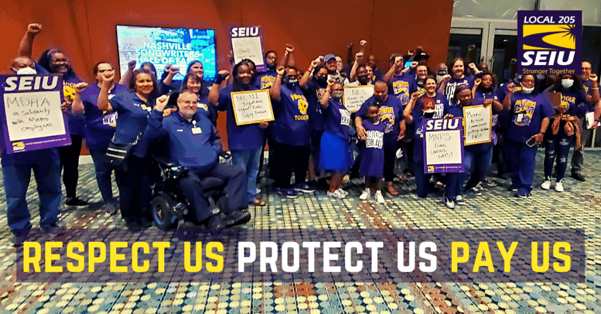
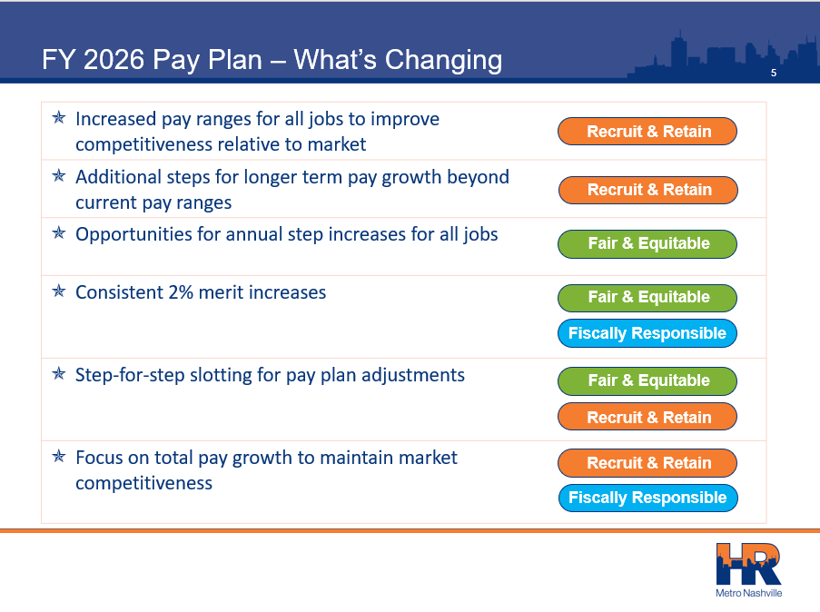
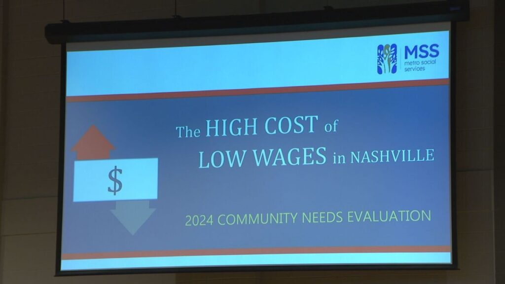
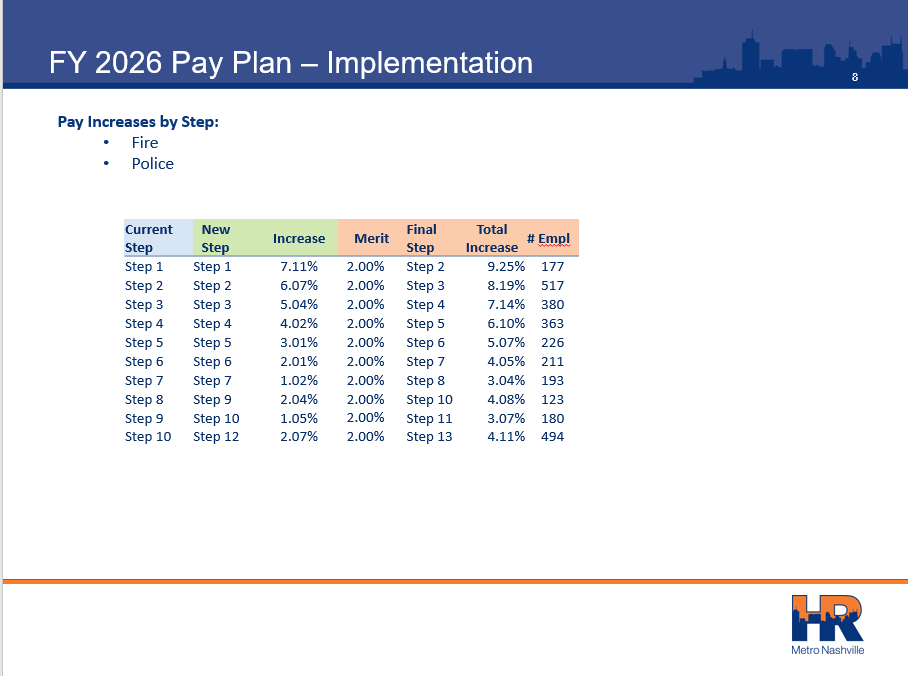
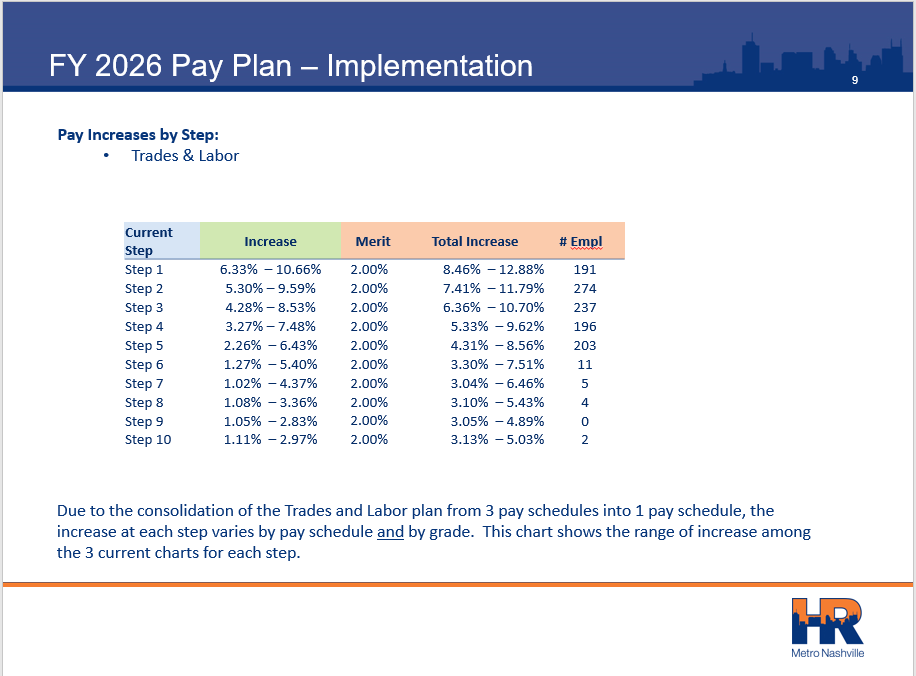
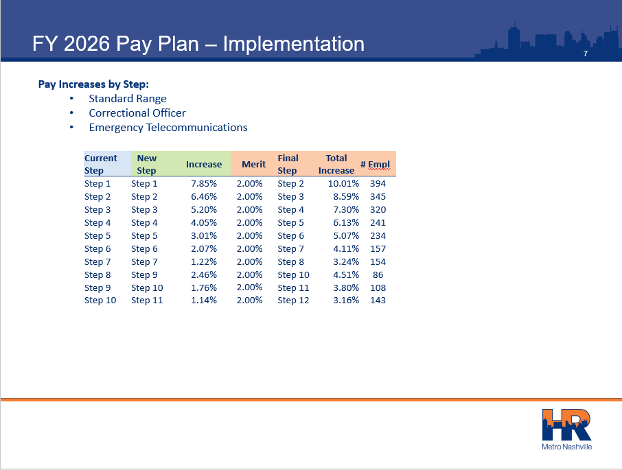
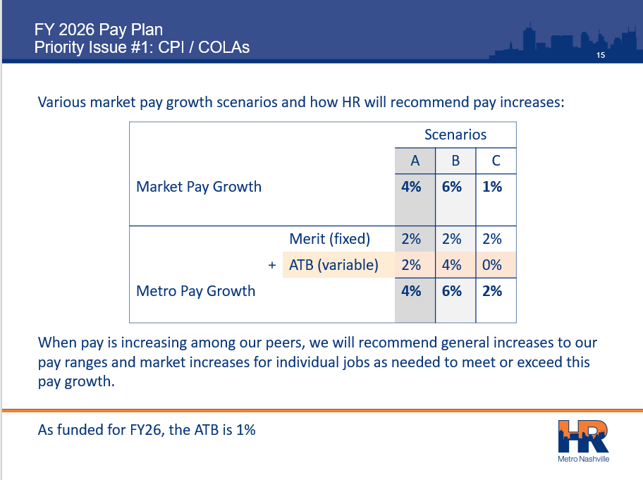
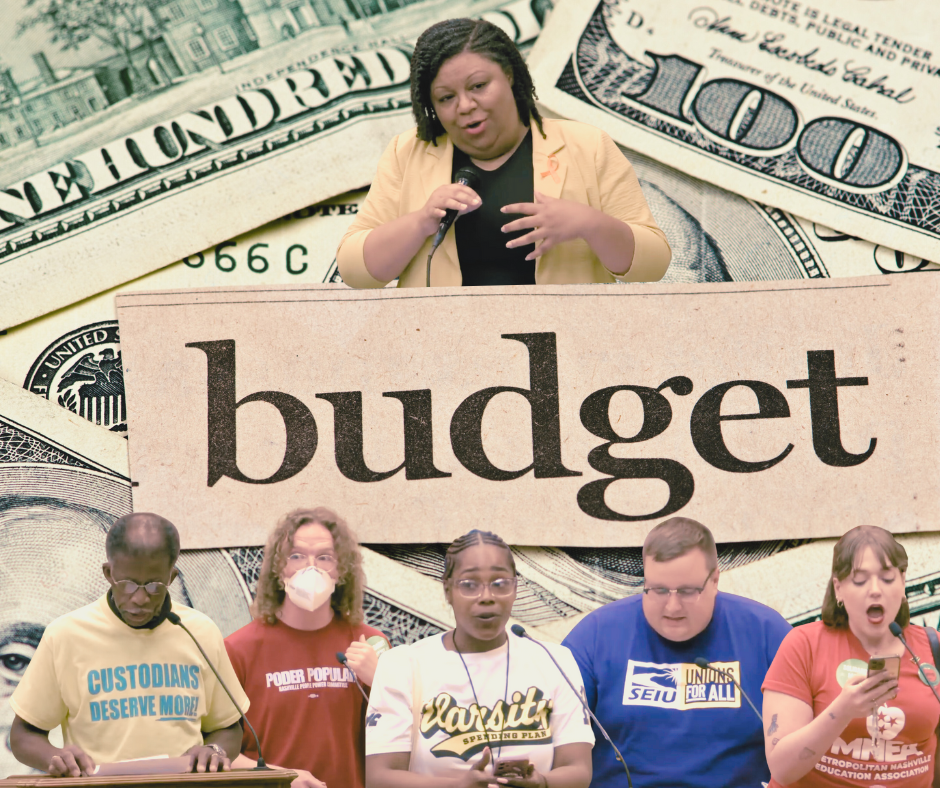
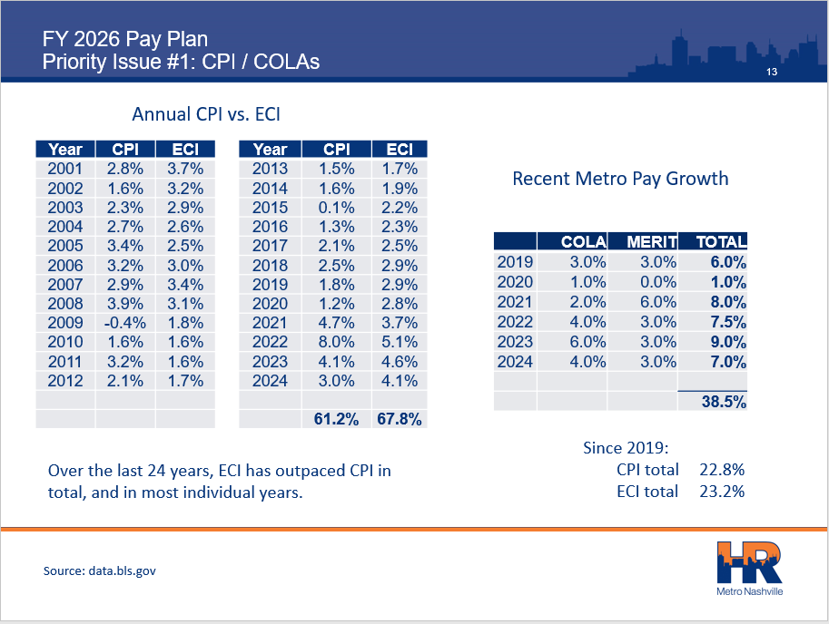
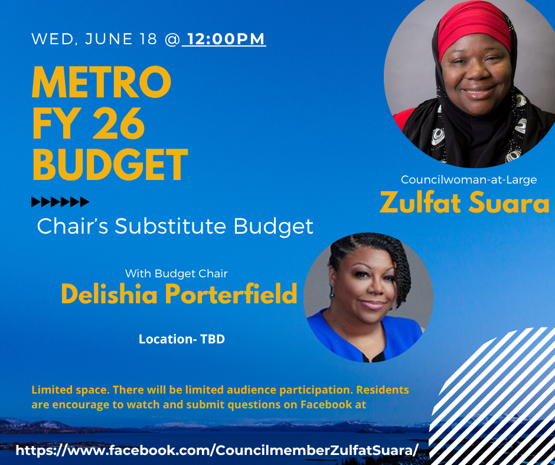

A New Pay Plan for Metro Workers: What It Means and Why It Matters
Thank you for joining me for another pivotal discussion as we navigate our city’s priorities during the FY26 budget season. This conversation was especially close to my heart because it centered on our public servants—the thousands of Metro employees who keep our city running smoothly every single day. From sanitation workers and 911 operators to our firefighters and librarians, these individuals are the backbone of our city.
This year’s budget builds on the structural changes introduced last year with the Civil Service Pay Plan and is part of a continued effort to reshape compensation for Metro workers. It’s not just a policy shift—it’s a statement of our values. How we compensate our public servants is how we show them that we see their labor, we value their service, and we respect their lives. For those who missed this important conversation, you can watch it at the link below. I encourage you to tune in each Saturday until the budget is passed—we’ll be diving into different aspects of the budget and its impact on us all.
Why This Matters
This is not just about percentages on a paycheck—it’s about respect, equity, and retention. A fair and modern pay plan acknowledges the cost of living in Nashville, the value of long-term service, and the systemic inequities that have left some workers underpaid for years.
For this important conversation, I gathered a distinguished panel of labor leaders and advocates to break it all down with us, including: Jessica Stewart, President of SEIU Local 205, Ethan Link, Member of the Civil Service Commission, and Dr. Paula Pendergrass, President of the Metropolitan Nashville Education Association (MNEA)
Together, they helped us examine what the FY26 plan truly means for our workers—and where we still have work to do.

Who Was at the Table: Meet the Panelists
Jessica Stewart is the first Black woman to lead SEIU Local 205, the union that represents many of Metro Nashville’s general government employees. With deep roots in worker advocacy, Jessica joined us to speak directly about how her members—especially long-term employees—are reacting to the current pay proposal.
Ethan Link, a member of the Metro Civil Service Commission, brought technical insight into how the proposed pay structure was developed. Outside of his role on the commission, Ethan also works with LiUNA (Laborers’ International Union of North America), giving him a broad understanding of how public and private sector compensation systems function.
Dr. Paula Pendergrass, President of the MNEA, once again stood up for our educators and school-based staff. She provided powerful testimony about how MNPS employees—many of whom are excluded from proposed wage floor increases—are impacted by these budget choices.
What’s in the FY26 Civil Service Pay Plan?
The FY26 proposed budget is a the multi-year implementation of Metro’s redesigned Civil Service Pay Plan—based on a $1 million compensation study by Mercer. It retains and builds upon existing structure while introducing new funding priorities and concerns:
- Market-Based Adjustments: Totaling 3–9% depending on position in range.
- Expanded Step System: Increased from 10 to 15 steps to allow more room for career progression.
- 2% Annual Step Increases: All eligible employees on a step plan receive an annual 2% raise.
- 1% Across Board: Available to every worker.

Voices from the Ground: Mixed Reactions from the Workforce
Jessica Stewart opened with gratitude for the steps Metro has taken, but she was clear: “It’s a mixed bag.”
For newer employees or those lower on the pay scale, the budget delivers long-awaited increases. However, Jessica expressed concern that veteran workers—those already at or near the top of their pay grade—are being left behind. “It’s hard to explain to someone who’s given 20 years to Metro why they’re only getting a 3% raise when someone new may be getting 10% or more.”
That disparity, she said, is creating frustration and hurting morale.
Jessica also criticized the city’s choice to base future raises on the Employment Cost Index (ECI) rather than the Consumer Price Index (CPI). The ECI, while more stable, doesn’t reflect the real cost of living in Nashville, especially with rising housing prices. “If you don’t tie raises to actual affordability, you’re going to keep falling behind,” she warned.
The Structural View: Insights from the Civil Service Commission
Ethan Link provided a technical explanation of how the new pay structure is supposed to work. He shared that the 15-step system is designed for longevity, with built-in increases that encourage retention.
However, he acknowledged gaps in this year’s execution. “The structure is sound,” Ethan said. “But if we aren’t fully funding it—or if we’re cherry-picking who gets the biggest bumps—we’re breaking the trust we asked workers to give us last year.”
Ethan also strongly supported a return to multi-year pay planning, saying employees need predictability to plan their lives. “You can’t tell someone one year you’ll raise their wage floor, and the next year exclude their job class from that floor. That’s not just unfair—it’s irresponsible.”
Educators Left Behind: MNPS Should Not be Excluded Again
Dr. Paula Pendergrass delivered perhaps the most emotional and urgent remarks of the day. She reminded us that MNPS staff were excluded last year from the $20/hour minimum wage policy applied to general government employees. “How can you look a classroom aide or a cafeteria worker in the eye and tell them they’re not worth $20 an hour when their peers in other departments are?”
Paula emphasized that many MNPS employees are working second jobs, struggling to pay rent, and should receive the same merit or COLA increases as other Metro staff.
“We are Metro workers too,” she said. “And we demand to be treated that way.”
CPI vs. ECI – A Contested Metric
One of the most debated issues was the City’s continued use of ECI (Employment Cost Index) over CPI (Consumer Price Index) for future wage benchmarking. While ECI tracks wage trends nationally, it doesn’t reflect Nashville’s unique cost-of-living crisis.
Jessica explained it clearly: “If everyone decides janitorial work is worth X nationwide, that doesn’t mean that same pay will get you housing in Nashville.”
Ethan shared that while ECI have been higher, the current trend does not support this will always be the case. He shared that many are worried that the country may be heading towards a recession. In that case a cost of living adjustment that only focuses on emloyment cost will be detrimental wthout taking into considerayion the rising cost of living.
Ethan added: “Public employees should be able to live in the neighborhoods they serve. If we tie their pay to a number that ignores rent, groceries, and childcare, we’ve failed to meet the real need.”

Commitment and Follow-Through
Trust was a major theme. The panelists reminded us that Metro has a history of announcing pay plans and then failing to sustain them. Ethan emphasized the need for multi-year plans that offer stability and transparency.
Jessica pointed out that even though the Civil Service Commission benchmarked ECI at 4.1% this year, the mayor only proposed a 3% (2% merit and 1% across board)—already undercutting their own formula. “Workers see the difference. And they remember,” she said.
Approve or not Approve- That is the Question
The New Pay Plan is now before council for a vote. A colleague during floor debate suggested that the Pay Plan should be rejected outright. I disagree with this position for the following reasons:
Reason #1
The current plan differs from last year’s primarily because of the market adjustment. This is critical as it brings all employees closer to market rate. This is especially important for a low income workers that will see up to 10% increase in their salary.
For years, these workers have been underpaid. Therefore, these increases are not a favor, but rather, righting what was wrong. Not approving this plan, could mean that these workers may not receive this adjustment until a new plan is approved.
See the different pay plan increases in the charts below.



Reason #2
Annual employee pay will be adjusted annually based on 2 criteria. One is the merit annual merit increase which is recommended at 2% and the Across The Board increase, which was recommended at 2%. Personally, I wish the merit increase remain at 3% as it gives employees a better guaranteed rate to plan with. However, this is not a reason to vote the plan down, since it can be corrected by Council.
As the chart below indicates, The Across The Board (ATB) can be used by council to ensure that employees are paid based on market pay growth. If market growth is 4%, then ATB will be 2% since everyone already gets the 2% merit. When market is 6%, then the recommended ATB will be 4%. In the event that market growth is only 1%, there will be no ATB since the merit increase of 2% is higher.

Reason #3
Since joining the council in 2019, Metro Council has always prioritized employees. Every budget year, the chair’s amendment always includes an adjustment for employees. The current budget chair, CM Porterfield, has always been a huge supporter of our labor. I have no doubt she will do all she can to find the 1% Across Board.
I understand employees’ frustration and agree it is unfair for metro employees coming to council to ask for increases every year. Unfortunately, it is how metro government is set up. Current council cannot bind future councils to future expenses. This means that this council cannot mandate that Across Board must be x% every year. It will be up to each council to determine. I hope that future mayors and councils will continue to prioritize metro employees.

Q & A
Can the council raise the Across Board increase to 2%?
YES. The recommended across board increase by the civil service with the New Pay Plan is 2%. However, the mayor’s budget only has 1%. Council can adjust this percentage via the substitute budget. Total cost of the increase according to HR is $10M. I strongly support this adjustment as it will bring the total salary increase to 4% (2% merit and 2% across board)
The new plan reduces merit increase from 3% to 2%, can Council increase it back to 3%?
NO. By law, Metro cannot make an adjustment to pay plan that is not across board. Meaning council cannot make any change that will affect a certain class of employees or leave others out. By adding a 1% step increase, this will leave out open range workers and as such will not be considered across board. In addition, the additional cost of a 1% step increase is estimated over $50M. In order to make this happen, mero will have to cut expenses. I heard that there is suggestion to reduce MNPS funding to accommodate this increase. I am an emphatic NO to cutting MNPS funding.
ECI is currently higher than CPI, what happen in the future when the reverse happens?
According to HR director, while HR will continue to use ECI for its recommendations, the Mayor and Council have the authority to use any metric they desire to calculate any additional adjustments. Therefore, when CPI is higher, the Mayor and or Metro Council can adjust the total $ raises accordingly. This, however, has to be done for all employees Across The Board.

This plan is for 15 years? Are employees stuck with this forever?
NO. While it is not fiscally responsible or practical feasible to do a pay study every year, the plan can be reviewed and amended as needed.
The FY26 Civil Service Pay Plan is a step forward, but it must be followed by sustained commitment and structural reform. Equity means ensuring all Metro employees—from school staff to sanitation crews—are seen, heard, and compensated fairly.
Why This Isn’t Just Policy—It’s Personal
These decisions have real consequences.
I’ve heard from Metro custodians who share bedrooms with their kids because rent is too high. I’ve met 25-year employees whose raises haven’t kept up with inflation. I’ve heard from bus drivers and cafeteria workers who work overtime but still can’t afford groceries.
The pay plan is more than a chart—it’s a reflection of what we value as a city.
As Jessica, Ethan, and Paula made clear: we cannot build a thriving, just Nashville without investing in the people who serve it.
If you missed the conversation, I encourage you to watch the full session at the link below. This summary could not do justice to the emotional and practical points shared by my amazing panelists on behalf of their members.
NEXT BUDGET CONVERSATION- CHAIR PORTERFIELD’S SUBSTITUTE BUDGET
The next Budget Conversation will be on Wednesday June 18, 2025. Join CM Porterfield and me at 12 noon, as we take a close look at her substitute. The physical location will be announced no later than 11 am on Monday. Space will be limited, so we encourage folks to join live on my Facebook page. Join us on Facebook Live at https://www.facebook.com/CouncilmemberZulfatSuara/ with your questions & comments.

Thank You
To Jessica Stewart, Ethan Link, and Dr. Paula Pendergrass—thank you for your courage, clarity, and commitment to justice. And to our city workers: thank you for everything you do. We see you, we value you, and we’re fighting for you.
With gratitude and determination,
Zulfat Suara
Metro Council Member At-Large